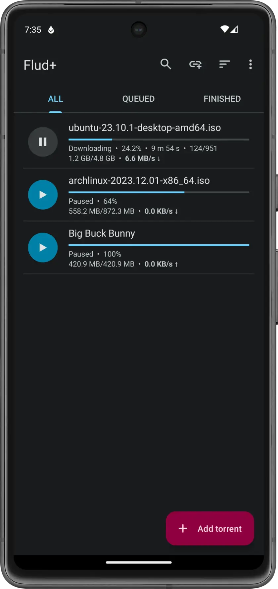
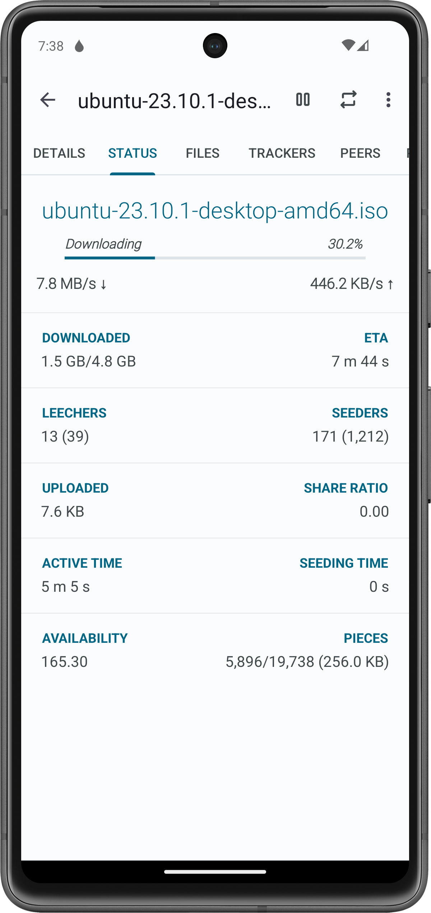

用了半年 Flud 才发现：这 5 个隐藏功能让手机 BT 下载彻底翻身
大多数人把 Flud 当普通手机 BT 下载器用了，其实它藏着下载中搬目录、顺序下载、VPN 绑定等一系列桌面级隐私控制功能，这篇把这些冷门入口全挖出来。
你以为 Flud 就是安卓上装个种子文件然后蹲在那里等下载完？
我一开始也是这么想的。装上它纯粹是朋友从flud官网看到推荐，说"这个没限速"，用了半年，每次发现新东西都是在设置里瞎点的时候——这货藏得真深，官方文档提过但 App 里半遮半掩，很多功能入口连个 emoji 都没给。整理了 5 个最值得折腾的，如果你也是把手机当主力 BT 客户端，肯定有一个能戳中你。
1. 下载到一半换位置——断点续搬不丢数据
这是我最近才发现的，当时手上一个 40GB 的合集下到一半，内部存储炸了，正准备删重来，随手长按种子列表里的项，跳出来一堆选项，其中有个 Move to 按钮。
点进去选 SD 卡上的新目录，Flud 自己暂停下载、把已有的碎片搬过去、然后从断点继续。短暂暂停了大概十几秒——取决于当时已经下载了多少文件——但一个字节都没丢。
入口在哪：种子列表里长按某一项 → 弹出菜单最底部。
谁用得上：经常下大文件、手机只有 64GB 存储但插了 256GB SD 卡的人。什么人可以无视：内部存储够大、从来不移动文件位置的，这个功能对你来说就是个彩蛋。
顺便说个踩过的坑：Android 4.4 以后第三方 App 不能直接写 SD 卡根目录，Flud 选 SD 卡时会自动把路径落到 Android/data/com.delphicoder.flud/ 子目录下。这个不是 Bug，是 Android 系统规定的，但你卸载 Flud 后这个目录会被系统清理，重要文件记得导出到别处，安装包本身从flud下载拿最稳。

2. 顺序下载——边下边播视频的关键开关
你是不是遇到过这种情况：种子下了一半，想先看第一集，但 BT 协议默认是乱序拉碎片的——第一集的片段可能散落在几十兆还没下载到的地方。
Flud 有个 Sequential download 开关，打开之后碎片按顺序拉取，文件头先下来、然后中间、最后尾部。配上一个支持边下边播的播放器，下到一半就能开始看了。
入口在哪：Settings → 找到跟下载行为相关的设置区。具体路径不同版本可能有微调，但名字就叫顺序下载或 Sequential download，搜设置栏直接搜关键词最快。
提醒：顺序下载对 BT 网络不太友好——peers 通常更愿意上传稀有的碎片，顺序拉等于一直在请求"我要这个特定位置的碎片"，可能偶尔被 peers 忽略、速度略降。但如果你是追剧党、边下边播的刚需，这点速度损失完全能接受。
3. WiFi 限定 + VPN 绑定 + Kill Switch——隐私三件套全在手机上
Flud 最被低估的就是这一块。很多人只开了 WiFi Only 开关（离开 WiFi 自动暂停下载防烧流量），但它还有两个隐藏设置，组合起来能把手机 BT 的隐私防护拉到桌面级。
VPN 绑定：Settings → Security → VPN binding。绑死某个 VPN 接口之后，Flud 的所有数据只能走这个隧道——系统如果检测到指定 VPN 没连上，它直接停传。这比"开着 VPN 下载"靠谱多了，后者一旦 VPN 掉线，BT 流量会瞬间泄漏到你真实的网络出口。
Kill Switch：就在 VPN 绑定的同一块区域，和 VPN 绑定配合开。Tunnel 断了自动暂停所有种子，直到隧道重新连上才恢复。
我之前以为 Kill Switch 是桌面 BT 客户端才有的高级货，没想到 Flud 里藏着一个，也是翻flud文档才确认这是官方原生的。配合 WiFi Only 用的话：出门自动暂停、连上家 WiFi 自动恢复、VPN 掉了再暂停——三重保险，完全不用盯着它。
谁用得上：在意 BT 隐私、或经常在公司/学校 WiFi 下载的人。什么人可以无视：只下一些公开资源、完全不介意被看到的，这套确实有点过度设计。

4. 协议加密——出站入站可以分开开
BitTorrent 协议有固定的握手特征，网络运营商可以用深度包检测（DPI）识别出来然后限速甚至封端口。协议加密就是在握手阶段把连接加密，让 DPI 设备看不出来这是 BT 流量。
Flud 的加密设置比大多数同类客户端灵活：出站连接（Flud 主动连别人）和入站连接（别人连过来）是分开开关的。默认配置是 Prefer encryption（优先加密，对方不支持就退回非加密），兼容性最好。
入口在哪：Settings → Security → Protocol encryption。
为什么要分开开：入站加密需要你有开放的端口——很多人没有做端口映射，入站加密开了也白开。出站加密才是真正防 DPI 的关键，单独开出站就够了。分开开的好处是不会因为开了入站加密但没有开放端口而产生不必要的连接等待。
5. IP 过滤——拉黑 BT 骚扰者和吸血客户端
Settings → Security → IP filtering 这一块，官方文档提过但 App 里入口确实不显眼。加载一个公开维护的 BT 骚扰者 IP 黑名单（网上搜 "Bluetack ipfilter" 或 "PeerGuardian blocklist" 能找到），Flud 会拒绝和名单里的任何 IP 建立连接。
主要能屏蔽两类：反盗版监控机构的 IP、已知的吸血客户端（只不下、不上传或极少上传）。
实际效果：不是万能的——对方可以换 IP，黑名单也可能漏。但和加密、代理/VPN 一起用，形成"防 DPI + 换出口 + 拉黑特定来源"的三层防护链，比单独用任何一个效果都好。
写在最后
Flud 定位是安卓上的 BT 下载器，但它藏的这些东西——下载中搬目录、顺序下载、VPN Kill Switch、拆分加密、IP 过滤——其实都是桌面 BT 客户端才有的高级功能。官方没怎么宣传，入口也藏得深，需要你在设置里翻到底才看得见。
把它用透的意思是：别只当个下载工具用，去看看那些灰着的开关、长按菜单里藏着什么、设置页最后一屏还有什么选项——很多功能就在那里等你点一下。
相关的软件资料和维护记录，我同步存了三份——GitHub上是主版本、Gitee走国内镜像方便访问、GitCode是额外备份，哪边顺手去哪边拿。